Part 3 - Performing CSRF
With the tools that you have installed. We can now start doing by finding the vulnerability of the Juiceshop website.
First Create an account on the Juiceshop website.
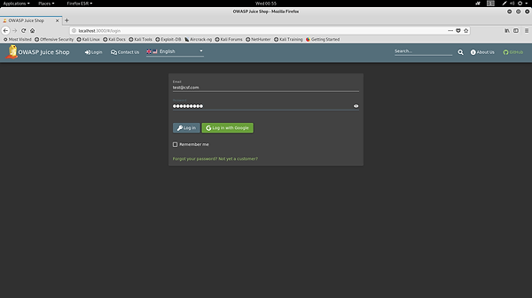
Creating an account, your own details will do.
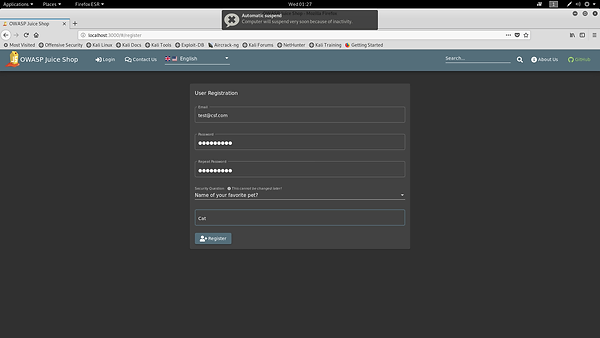
and Login to the juice shop.
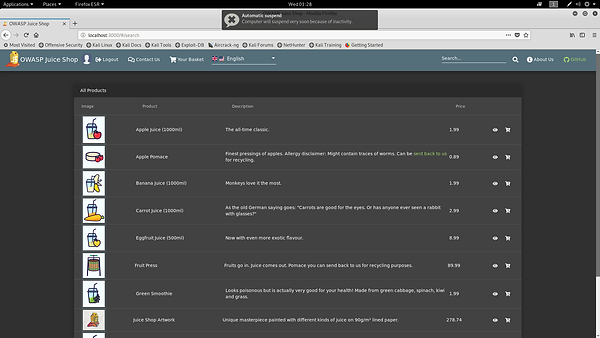
Start up Burpsuite
Select "temporary project" and click Next.
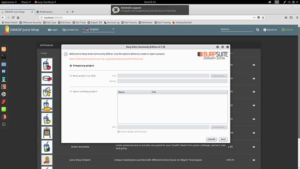
Select "Use Burp Details" and click Start Burp.
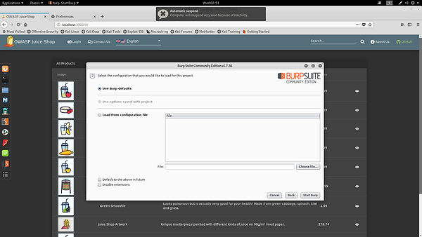
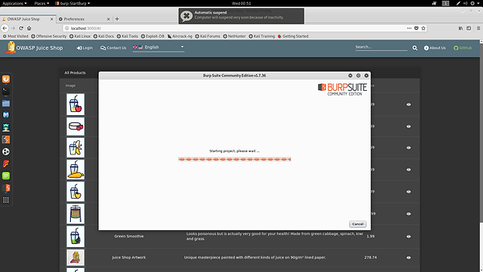
Burpsuite is now open, click on proxy tab and ensure that intercept is of because we won't be intercepting any connections.
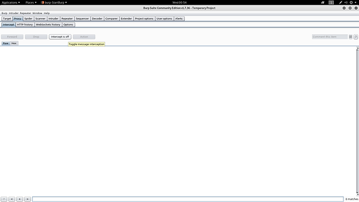
We will be making use of Burpsuite to sniff the incoming and outgoing HTTP request.
In this CSRF tutorial, we will be creating a website to trick the user.
Change the password of your account to inspect how does the webpage send the HTTPRequest.
Go to Proxy tab and see the HTTP History. As you can see that website uses GET request.
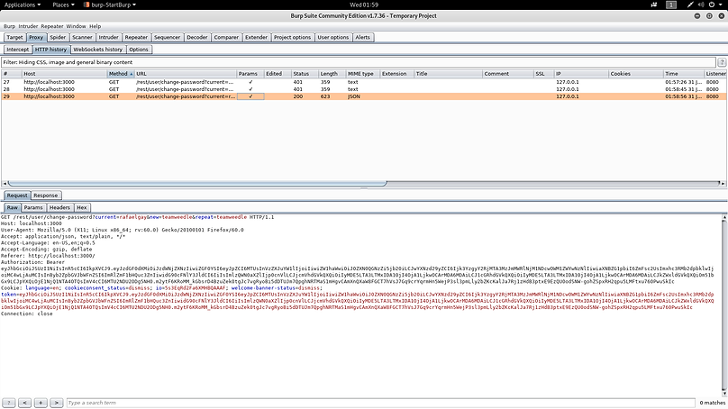
Send it to the Repeater for manually manipulating and reissuing individual HTTP requests, and analyzing the application's responses.
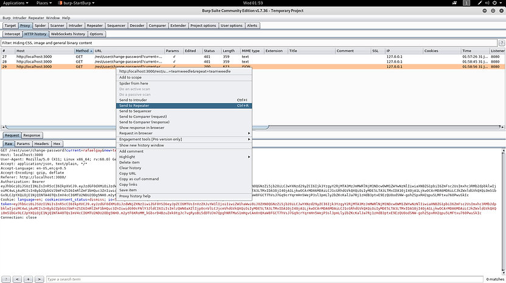
Go to the Repeater tab.
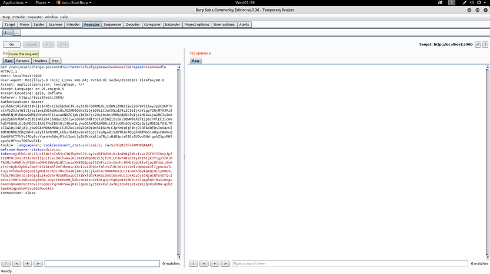
Look at the request and response
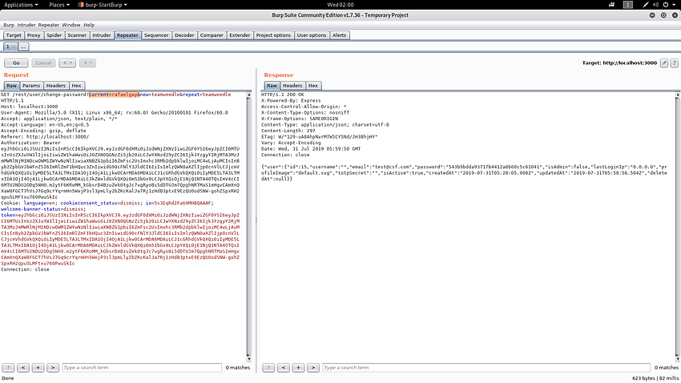
Remove the current password value and notice that the request still works Copy the GET request and we will be using it to create a CSFR.
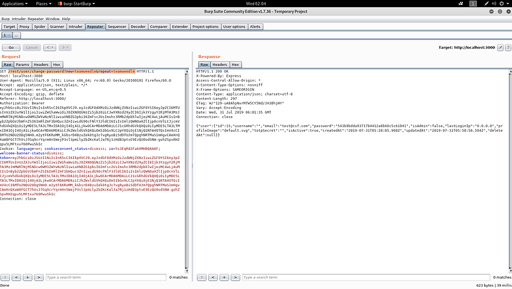
Create a new text and type the following code:
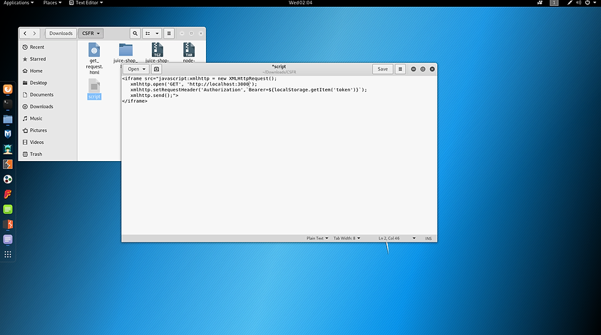
Paste the get request after http://localhost:3000
Set your password you want to change for your target user and copy the entire script.
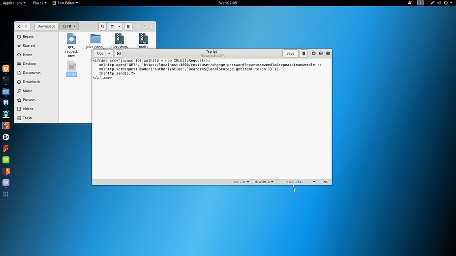
We will need to execute this script on the site, in order for the CSRF to work.
The search box uses get request.
Paste the script on to the search box.
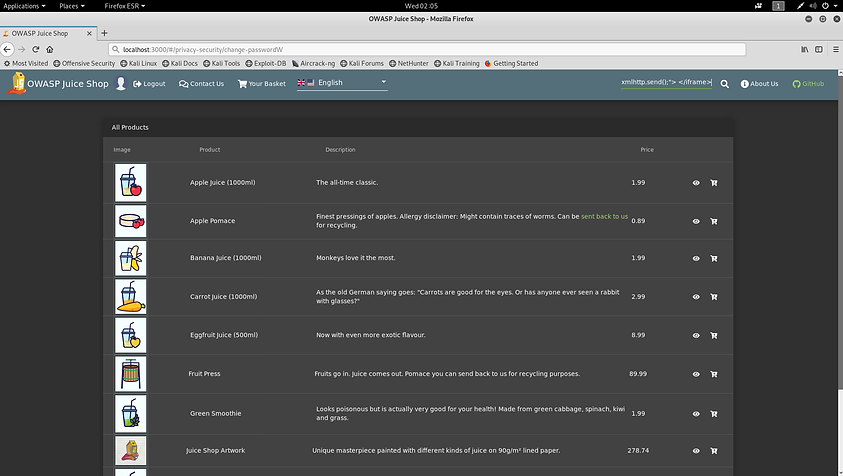
Notice how the script is successfully executed.
It has successfully changed my password without using the change password form.
The URL is the key to perform CSRF, copy the URL and shorten it with tinyurl.com to make the URL less suspicious.
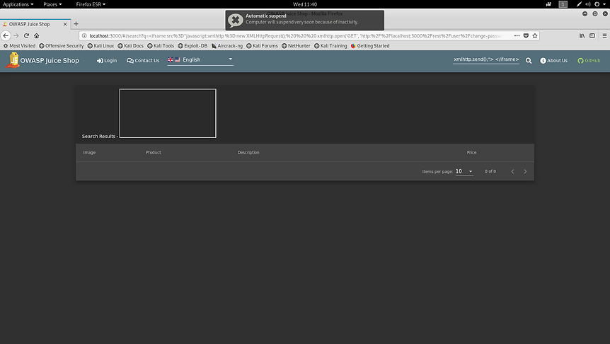
Create an HTML webpage to trick the user into clicking the link.
Click link to watch an awesome video: